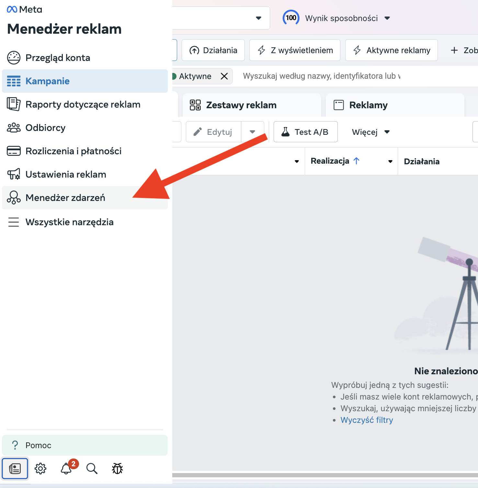
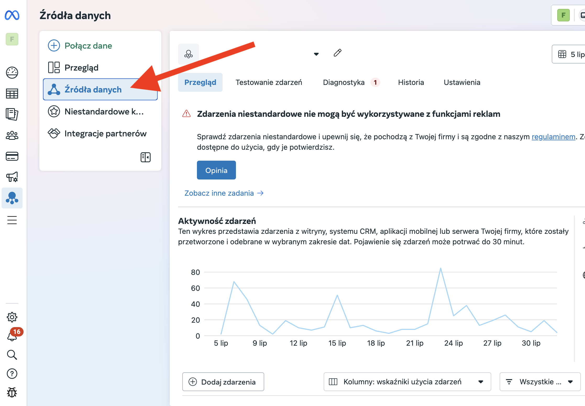
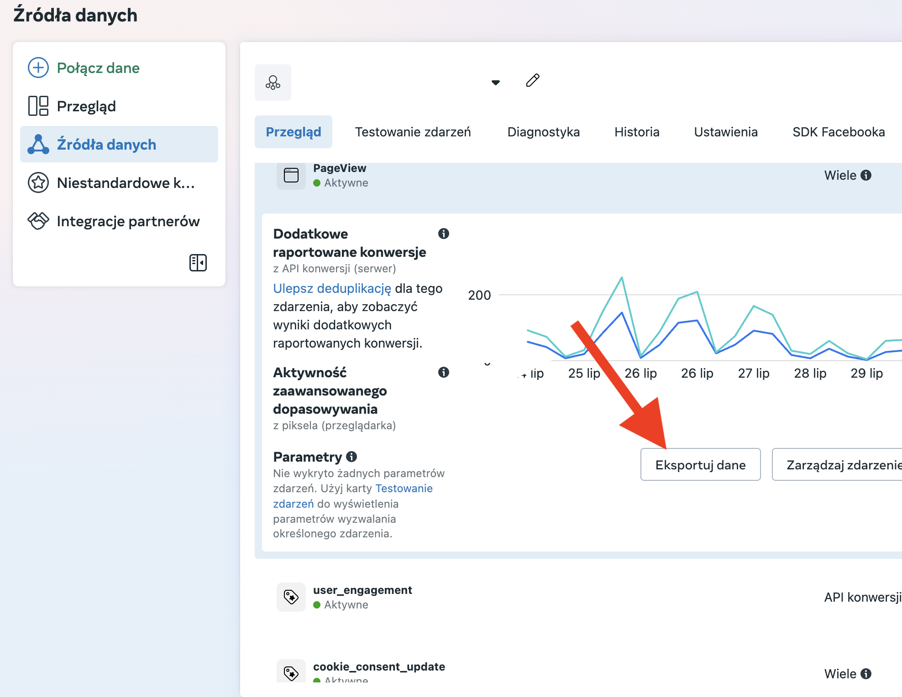
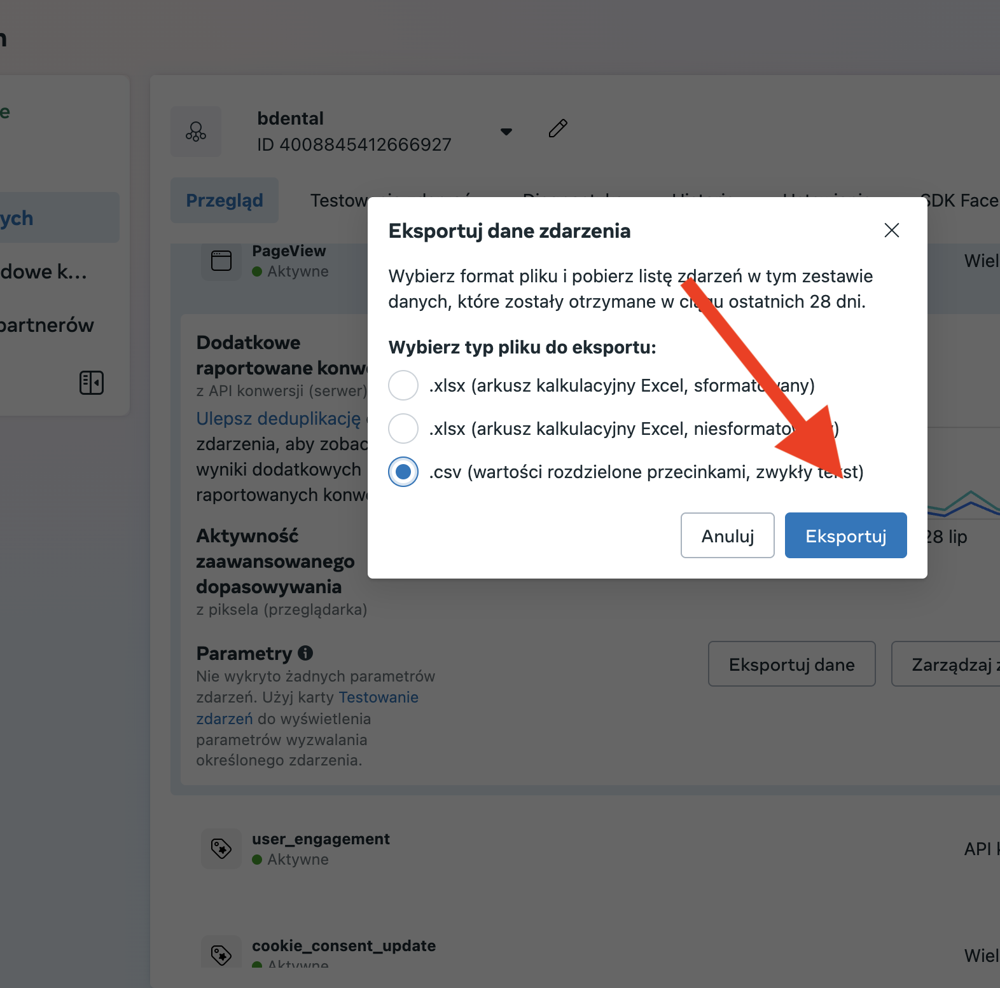

W marketingu cyfrowym zrozumienie zachowań klientów ma kluczowe znaczenie dla sukcesu. Podczas gdy platformy takie jak Facebook automatycznie wykorzystują bogactwo danych do optymalizacji kampanii, uzyskanie bezpośredniego wglądu w te informacje może zapewnić dodatkową przewagę. Ten artykuł pokaże ci, jak łatwo uzyskać dostęp i analizować dane o klientach, aby stworzyć wizualną mapę aktywności, wskazującą optymalne czasy dla twoich działań marketingowych.
Cel tych danych: kopalnia złota dla mądrzejszych kampanii
Dane, które możesz pobrać z Facebook Ads Manager, to "kopalnia wiedzy o twoich klientach". Podczas gdy algorytmy Facebooka nieustannie pracują w tle, aby zoptymalizować dostarczanie reklam, bezpośredni dostęp i analiza konkretnych danych aktywności pozwala marketerom uzyskać głębsze, bardziej szczegółowe zrozumienie zachowań użytkowników. Ten bezpośredni wgląd uzupełnia automatyczne procesy Facebooka, umożliwiając:
- Identyfikację szczytowych czasów aktywności: odkryj dokładnie, kiedy twoja publiczność jest najbardziej zaangażowana w określone działania, takie jak przeglądanie stron.
- Udoskonalenie targetowania i planowania: wykorzystaj te insights do bardziej precyzyjnego planowania kampanii, zapewniając, że twoje reklamy są widziane wtedy, gdy najprawdopodobniej będą rezonować.
- Zwiększenie ogólnej skuteczności kampanii: dopasowując swoje działania marketingowe do sprawdzonych wzorców aktywności klientów, możesz znacząco zwiększyć trafność i wpływ swoich reklam.
Krok po kroku: pobieranie i analizowanie danych
Pobierz plik danych z Facebook Ads Manager:
- Przejdź do Menedżera Reklam (Meta) i kliknij w Menedżer zdarzeń.
 - W Menedżerze zdarzeń wybierz piksel, który chcesz przeanalizować i kliknij Źródła danych.
 - W zakładce Przegląd wybierz konkretną aktywność, którą chcesz analizować, na przykład "Pageview".
 - Kliknij na wybraną aktywność. W oknie, które się pojawi, wybierz opcję pliku CSV i kliknij eksport.

Stwórz heatmapę w sekundach:
Otwórz narzędzie AI takie jak Google Gemini. Prześlij pobrany plik CSV i wprowadź proste polecenie:
Rezultat i korzyści: optymalizacja harmonogramu kampanii
W ciągu zaledwie kilku sekund, bez potrzeby używania skomplikowanych narzędzi, otrzymasz wizualną mapę. Ta heatmapa będzie wyraźnie pokazywać "najlepszy czas na twoje kampanie". Ta prosta metoda pozwala ci wskazać optymalne godziny i dni tygodnia, kiedy twoi klienci są najbardziej aktywni, umożliwiając bardziej precyzyjne targetowanie i ostatecznie zwiększając skuteczność twoich inicjatyw marketingowych.
Dodatkowe możliwości techniczne:
Analiza tych danych otwiera również drzwi do zaawansowanych optymalizacji technicznych:
- Testowanie Facebook Pixel - Zidentyfikuj anomalie w danych, które mogą wskazywać na problemy z implementacją pixela.
- Walidacja Conversions API - Porównaj wzorce aktywności z danymi server-side, aby wykryć rozbieżności.
- Diagnostyka trackingu - Użyj heatmapy jako baseline'u do sprawdzania, czy wszystkie zdarzenia są poprawnie rejestrowane.
- A/B testing harmonogramów - Na podstawie odkrytych wzorców przetestuj różne strategie bid adjustments.
- Cross-validation danych - Zestawiaj dane z Event Manager z danymi z Google Analytics, aby zidentyfikować luki w trackingu.
Dzięki temu podejściu nie tylko optymalizujesz kampanie, ale również zapewniasz niezawodność całego systemu pomiarowego.
Ważne zastrzeżenie: kiedy optymalizacja czasowa ma sens
Warto pamiętać, że targetowanie godzinowe nie zawsze jest optymalne - zależy to od specyfiki twojego biznesu:
Kiedy ma sens:
- E-commerce - klienci robią zakupy w określonych porach
- Lokalne usługi - restauracje, salony, sklepy z godzinami otwarcia
- B2B - decydenci są aktywni w godzinach pracy
- Entertainment/Gaming - wyraźne wzorce aktywności wieczornej
Kiedy może nie mieć znaczenia:
- Usługi emergency - potrzeba może wystąpić o każdej porze
- Globalne kampanie - różne strefy czasowe niwelują wzorce lokalne
- Produkty impulsowe - decyzja zakupowa niezależna od pory dnia
- Long sales cycle - proces decyzyjny trwa tygodniami/miesiącami
Rekomendacja: Zawsze przetestuj optymalizację czasową przez co najmniej 2-4 tygodnie przed pełnym wdrożeniem. Jeśli nie widzisz znaczącej poprawy wyników, lepiej pozwolić algorytmowi Facebooka automatycznie optymalizować dostarczanie reklam przez całą dobę. Kluczem jest analiza własnych danych - jeśli heatmapa pokazuje równomierny rozkład aktywności, skupienie na innych elementach optymalizacji może przynieść lepsze rezultaty.